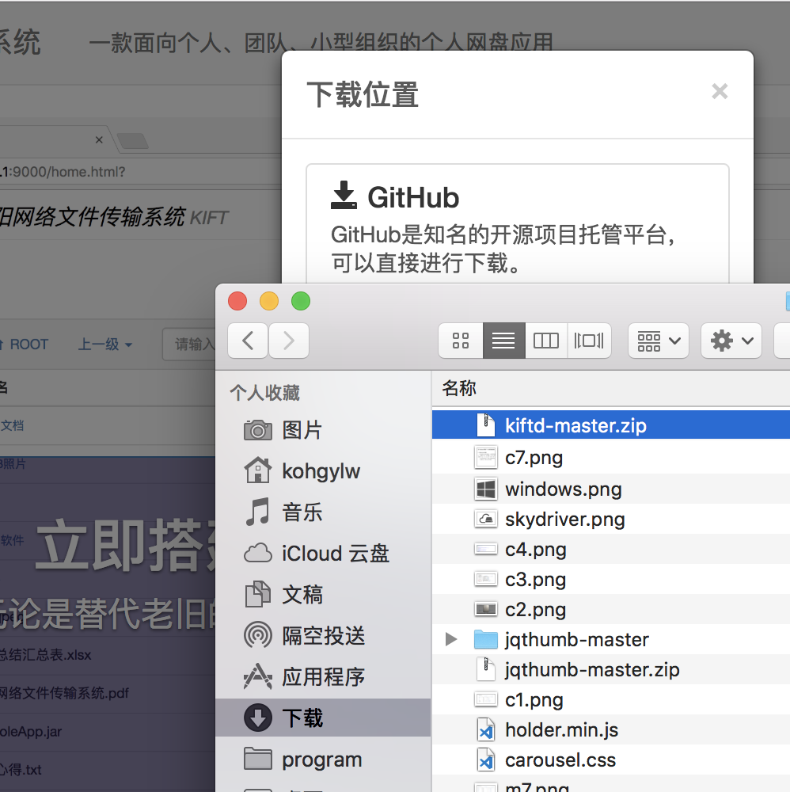
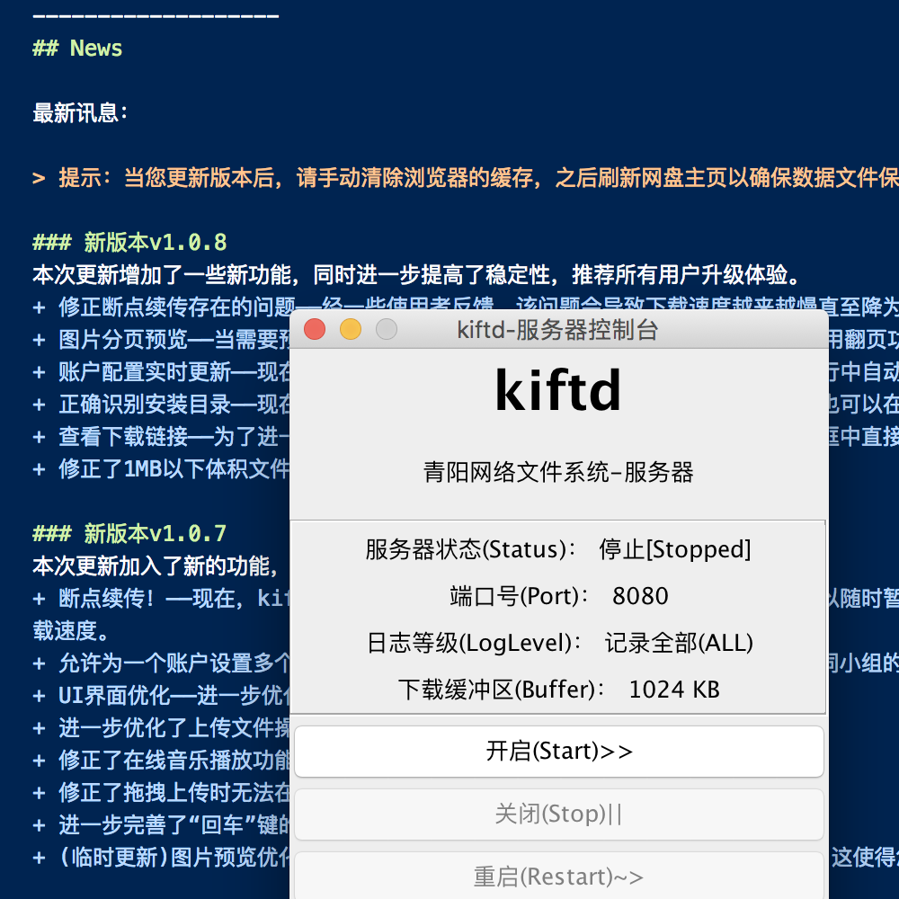

“专业”功能
kiftd简约不简单。视频播放、图片查看、音乐播放、权限设置、拖拽上传……这些高级功能，对kiftd来说都是标配。
真正跨平台
Windows？Linux？Mac？kiftd不通过开发不同的版本实现跨平台。一个版本，3大舞台，这才是真正的跨平台。
即开即用
有一种安装流程叫“解压即用”，忘掉复杂的配置和注册吧。还有一种卸载叫“删除即走”，绝不和你撒娇卖萌。
马上了解什么是kiftd？
您还在使用U盘分享文件么？您还在使用公共网盘保存隐私文件？您需要利用自己的资源搭建起一个网盘系统而苦于没有好的选择？现在，您可以选择kiftd了。 功能速览……

3分钟快速开始！
让小白用户完成一个完整的网盘系统部署工作需要多久？对于kiftd来说，设计耗时为3分钟。您只需通根据程序附带的“kiftd说明文档”来完成安装。它图文并茂，且简单易懂。 快速开始……

了解最新版本信息？
kiftd一直朝着更加完善的目标迈进，每个新版本都会加入一些实用的新功能并进一步提高其稳定性。 最新讯息……

立即获取源代码？
无论您是希望探索kiftd内部的奥秘还是对其进行DIY，您都可以随时下载kiftd的源代码！ 立即编译……